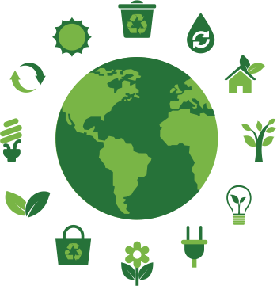

El reciclaje es un proceso para crear nuevos objetos a partir de materiales viejos y usados. Esto ayuda a reducir la energía y materiales potencialmente útiles en vez de ser desperdiciados
Generamos 21,5 millones de toneladas de residuos alimenticios cada año.
27.000 árboles son talados cada día para hacer papel higiénico.
Medio millón de árboles tienen que ser cortados sólo para producir los periódicos del domingo cada semana.
Una bolsa de plástico tarda entre 500 y 1.000 años en degradarse
